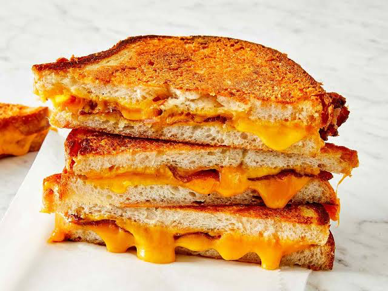

Odin Recipes
Quick and Easy Dinners
Learn all the recipes and tricks for getting dinner on the table in just a few.

This recipe for easy chicken and dumplings could not be more simple and it tastes great too!
Learn how to make a grilled cheese sandwich in a nonstick pan with buttered bread and American Cheddar for a classic hot sandwich.

A rich and creamy Swedish meatball sauce makes a comforting meal when served over pre-cooked meatballs. This quick and easy recipe makes a generous amount of sauce for 10 ounces of frozen meatballs. Serve over egg noodles or rice.


All sources of these articles from allrecipes